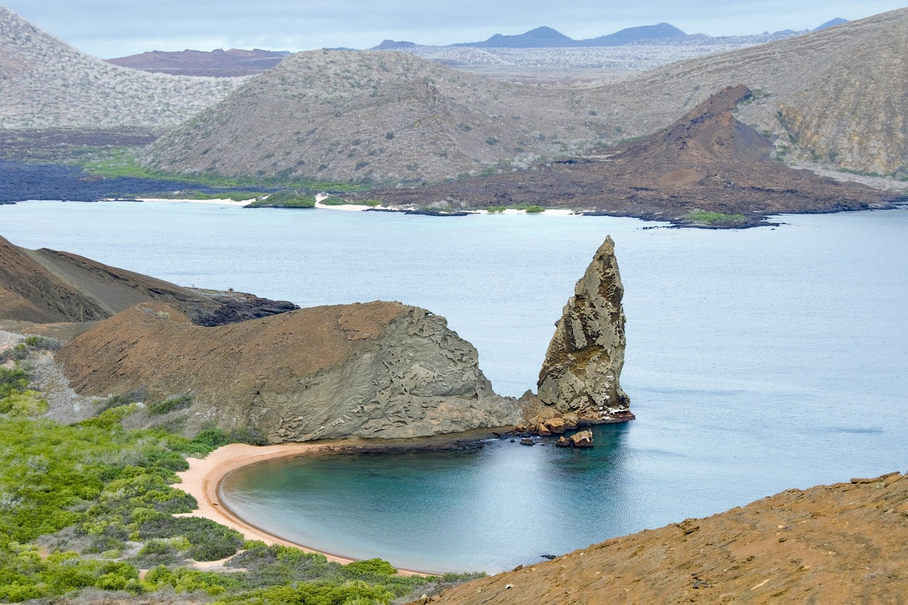

A Marvel of Engineering and Symbol of Unity
ChatGPT | Feb 19, 2024

The Timeless Majesty of the Brooklyn Bridge
The Brooklyn Bridge, an iconic symbol of both New York City and American engineering prowess, stands as a testament to human innovation and determination. Connecting the boroughs of Manhattan and Brooklyn across the East River, this majestic structure has not only served as a vital transportation link but also as a symbol of unity and progress. As one of the oldest and most recognizable bridges in the United States, the Brooklyn Bridge holds a rich history and continues to captivate both locals and visitors alike.
History and Construction
Designed by renowned engineer John A. Roebling and completed by his son, Washington Roebling, and his wife, Emily Roebling, the Brooklyn Bridge was officially opened on May 24, 1883. Its construction spanned 14 years and faced numerous challenges, including the death of John Roebling due to a construction-related injury and Washington Roebling's battle with decompression sickness. Despite these setbacks, the Roebling family's dedication and ingenuity prevailed, leaving behind a legacy that endures to this day.
The Brooklyn Bridge is a hybrid cable-stayed/suspension bridge, featuring massive granite towers that rise gracefully above the river. The distinctive Gothic arches and intricate details of the towers add to the bridge's aesthetic appeal, making it a timeless architectural masterpiece. At the time of its completion, the Brooklyn Bridge was the longest suspension bridge in the world, with a main span of 1,595 feet.
A Symbol of Unity
Beyond its engineering marvel, the Brooklyn Bridge holds immense cultural and symbolic significance. Serving as a unifying force, the bridge brought together the once-independent cities of Brooklyn and Manhattan, fostering economic growth and cultural exchange. The bridge's completion played a crucial role in transforming New York City into the thriving metropolis we know today.
The Brooklyn Bridge has also been a backdrop for historic events and cultural milestones. It has been featured in countless movies, paintings, and photographs, solidifying its place in popular culture. The illuminated towers of the bridge at night provide a breathtaking view, making it a romantic and picturesque destination for locals and tourists alike.
Pedestrian Walkway and Views

One of the unique aspects of the Brooklyn Bridge is its dedicated pedestrian walkway, allowing visitors to experience the grandeur of the structure on foot. As you stroll across the bridge, you are treated to panoramic views of the Manhattan skyline, the Statue of Liberty, and the bustling activity of the East River below. The walk offers a perfect blend of exercise, history, and breathtaking scenery.
The Brooklyn Bridge stands not only as a physical link between two boroughs but also as a symbol of human achievement, resilience, and unity. Its graceful design, rich history, and breathtaking views continue to attract millions of admirers each year. As a true testament to the indomitable spirit of New York City, the Brooklyn Bridge remains an enduring symbol of progress and a timeless icon on the American landscape.
Galápagos: A Living Tapestry of Evolution
ChatGPT | Feb 19, 2024
Embark on a Journey through Time and Nature
Nestled in the Pacific Ocean, approximately 600 miles off the coast of Ecuador, the Galápagos Islands stand as a testament to the marvels of evolution. This archipelago, composed of 18 main islands and numerous islets, has captured the imagination of scientists, naturalists, and adventurers alike for centuries. Renowned for its unique biodiversity and the groundbreaking discoveries made by Charles Darwin during his voyage on the HMS Beagle, the Galápagos Islands continue to be a living tapestry of evolution.
Geological Origins
The Galápagos Islands owe their existence to the relentless forces of geological activity. Born from a hotspot beneath the Earth's crust, volcanic eruptions formed these islands over millions of years. Each island is characterized by its distinct topography, ranging from barren, rocky landscapes to lush, green highlands. The geological diversity of the archipelago provides a variety of habitats that have played a pivotal role in shaping the evolution of its flora and fauna.
Biodiversity
What sets the Galápagos apart is the incredible biodiversity found within its boundaries. The islands are home to a remarkable array of species, many of which are found nowhere else on Earth. This isolation led to the development of unique adaptations in various organisms, illustrating the evolutionary process in action.
Land Iguanas and Giant Tortoises

Among the iconic inhabitants of the Galápagos are the land iguanas and giant tortoises. The land iguanas, with their distinctive yellow and orange hues, have adapted to the arid landscapes of some islands, while others boast populations of giant tortoises that exhibit diverse shell shapes based on their island of origin. These species showcase the adaptive radiation that occurs when a single ancestral species diversifies to exploit different ecological niches.
Darwin's Finches

Perhaps the most famous examples of adaptive radiation in the Galápagos are Darwin's finches. These small birds, with their varied beak shapes and sizes, evolved to exploit different food sources on the various islands. The finches' adaptations provide a vivid illustration of how natural selection operates, as their beaks are shaped by the specific environmental challenges each island presents.
Conservation Challenges
While the Galápagos Islands remain a living laboratory of evolution, they are not immune to the challenges posed by human activities. Invasive species, overfishing, and climate change threaten the delicate balance of this unique ecosystem. Conservation efforts are underway to protect and preserve the biodiversity of the Galápagos for future generations, ensuring that this living tapestry of evolution continues to inspire and educate.
The Galápagos Islands stand as a testament to the power of evolution and the interconnectedness of all living things. From the towering volcanic landscapes to the diverse array of endemic species, this archipelago continues to captivate and educate, inviting us to marvel at the wonders of the natural world. As we navigate the challenges of the 21st century, the Galápagos Islands serve as a reminder of the importance of conservation and stewardship, ensuring that this living tapestry of evolution endures for generations to come.